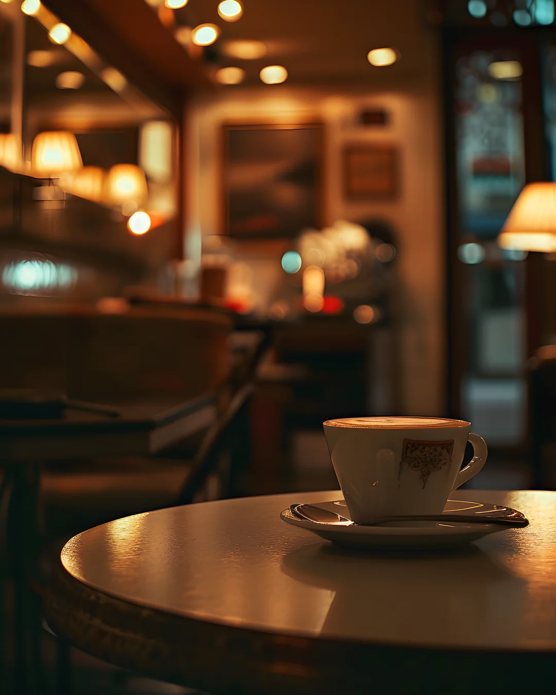

Cafetería de Especialidad y Pastelería de Autor en San Miguel de Tucumán
“Lumina Café de Especialidad es una cafetería y pastelería de autor en San Miguel de Tucumán, especializada en café recién tostado a la vista, métodos de filtrado artesanal, desayunos y espacio de trabajo con conectividad Starlink en la zona céntrica.”
Trazabilidad desde finca hasta tu taza servida fresca.
Espacio calmo para nómadas digitales y reuniones.
Referentes del café de especialidad en el norte.

El ritual del café perfecto, tostado a la vista.
Nuestros Pilares Gastronómicos y de Barismo
Ingredientes nobles, fermentación pausada y calibración diaria por balanza y refractómetro.

Espresso & Especiales
Doble shot calibrado a diario, Flat White aterciopelado, Dirty Chai especiado e Iced Lattes con leches vegetales de autor elaboradas en casa.

Filtrados Manuales
V60, Chemex, Aeropress y Prensa Francesa servidos en decantador de vidrio junto a la ficha técnica de origen con varietal, altura y proceso de secado.

Pastelería de Autor
Medialunas de masa madre hojaldradas con manteca pura, pain au chocolat, carrot cake con nueces tucumanas y laminados frescos horneados cada mañana.

Brunch & Desayunos
Tostones de masa madre con palta y huevo poché, bowls de yogur artesanal con granola de la casa, frutos secos y frutas de estación seleccionadas del mercado local.
Área de Cobertura y Envíos Express de Granos
Llegamos a tu hogar u oficina con café recién tostado en grano o molido según tu cafetera. Despachamos pedidos directos en menos de 30 minutos dentro de las zonas principales.
Barrio Norte
Av. Sarmiento, Av. Avellaneda, Corrientes, Santa Fe, Marco Avellaneda y alrededores residenciales.
Microcentro & Plaza Independencia
Zona bancaria y corporativa, Casa Histórica, Casa de Gobierno, San Martín, 24 de Septiembre y Peatonal Muñecas.
Barrio Sur
Av. General Paz, Buenos Aires, Congreso, Plaza San Martín y corredor de Tribunales.
Zona Universitaria (UNT)
Quinta Agronómica, Rectorado de la UNT, Facultades de Medicina y Filosofía y Letras.

Lumina Tostaduría
Mendoza 456 · Centro
Punto de PartidaPor qué elegir Lumina en Tucumán
Comparamos minuciosamente cada variable para garantizar que tu inversión en bienestar y sabor sea inigualable.
| Criterio de Calidad |
verified
Lumina Café de Especialidad
|
Café Tradicional |
|---|---|---|
| Origen del Grano Calidad en finca y trazabilidad | Fincas seleccionadas con puntaje >84 SCA, microlotes con trazabilidad completa de origen, variedad y proceso. | Mezclas comerciales genéricas sin identificación de finca ni varietal botánico. |
| Fecha de Tueste Frescura de aceites esenciales | Menor a 30 días, tostado in situ en nuestro tostador de San Miguel de Tucumán. | Meses o años en góndola comercial, comúnmente torrado con azúcar añadida. |
| Espacio de Trabajo Productividad y ergonomía | Conectividad Starlink 250 Mbps simétrica, tomas individuales en cada mesa y ambiente calmo. | Red pública saturada o lenta, enchufes escasos y contaminación sonora constante. |
| Opciones Alimentarias Salud digestiva y elaboración | Masa madre de fermentación lenta (24h+), leches vegetales sin azúcar y repostería sin TACC. | Panificados industriales ultraprocesados con grasas hidrogenadas y conservantes. |
| Baristas y Preparación Capacitación técnica | Baristas certificados SCA con formación en texturizado de leche, ratios de extracción y cata. | Operadores de maquinaria automática sin calibración térmica ni control de peso. |
Resolvemos tus dudas antes de tu visita
Todo lo que necesitás saber sobre nuestro café, tostado, conectividad y dinámicas de reserva.